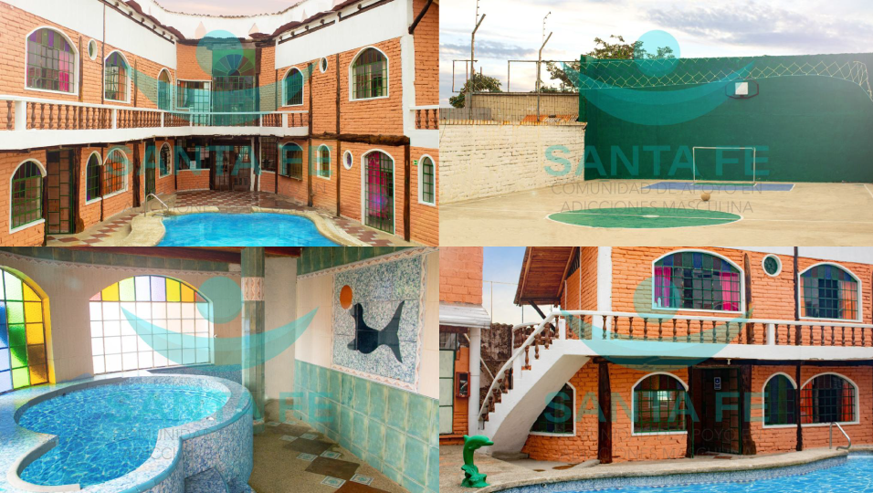

Contactanos 0995340216 0963489736
CENTRO DE DEPENDENCIAS Y TRATAMIENTO Contamos con instalaciones de primera. Contactanos vía What´s App o llamada al numero: 0963489736 / 0995340216
La medicina es muy importante dentro del proceso de recuperación del paciente que ha con sumido para así garantizar su salud y saber en que condiciones ingresa y en qué condiciones sale de nuestro centro
La psicología emocional desempeña un papel de apoyo en el proceso de rehabilitación, porque es posible desarrollar motivación, el control de los impulsos, el desarrollo de los estados de ánimo, y relacionarse con los demás.
El cuerpo tiene un sistema para la eliminación y la limpieza de sustancias de basura que funcionan constantemente. Y, dentro de este sistema, los riñones, el hígado y el intestino hacen un papel clave. Pero si la cantidad de toxinas es excesiva, estos órganos no darán suministro, en el que la basura se acumulará en la sangre, causando incomodidad y trastornos.
Los problemas dentales se encuentran entre los sufrimientos más frecuentes a causa del uso de medicamentos y alcohol, es por eso que se sugiere la necesidad de implementar un programa de salud oral y en el centro lo disponemos.
A causa del consumo y la preocupación que este causa en nuestro sistema en general una de las partes que mas se ven afectadas y en abandono son nuestros pies por eso es indispensable tener una correcta forma de recuperar la apariencia de nuestros pies para levantar nuestra autoestima.
El cuerpo se desgasta y es necesario reactivar músculos atrofiados, adicional te acompañamos en tus estudios si estas cursando algún nivel, para que sigas adelante.
En Santa fe, encontraremos un grupo de grandes y variados profesionales multidisciplinarios que tratarán en la mejor manera posible de todo tipo de dependencias y adiciones, dependencia de alcohol, adicciones a todo tipo de droga, trastorno de conducta, trastornos emocionales. Terapia que pone en práctica el centro se basa en el modelo de Minnesota, cuyos valores son, entre otras cosas, un tratamiento personalizado y global en todos los niveles de la persona, emocional y física; abstinencia total; la creación de una comunidad de apoyo En personas con mismos problemas y apoyo constante de la familia.
Centro Masculino
Centro Femenino
Elejimos esta bella ciudad por su ubicación y su clima.
248
Días de sol
100%
Aprobado
21 °C
Temperatura
Valle de los chillos San Rafael LUNES A VIERNES 09:00 - 19:00 SABADO-DOMINGO 10:00 - 14:00